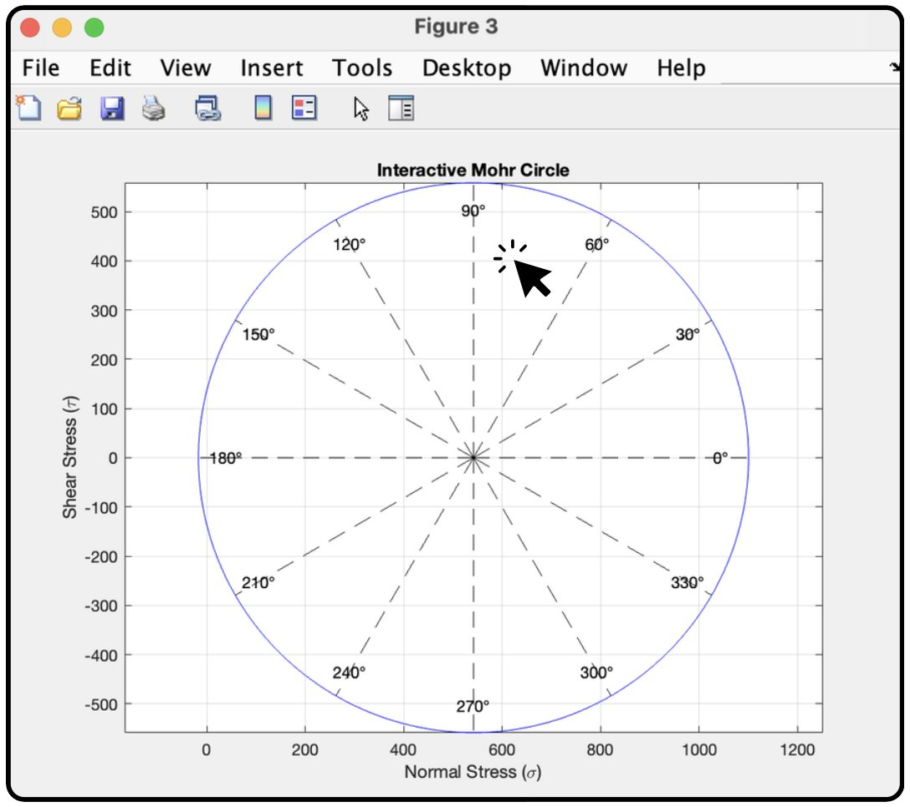

All projects
Case study · Engineering Tool
Interactive Mohr's Circle
An interactive MATLAB app for analysing stress and finding the transformed state of stress.
- Type
- Interactive app
- Subject
- Stress transformation
- Built with
- MATLAB


01.Overview
Mohr's circle is a graphical way to see how normal and shear stresses change as an element is rotated. This app plots the circle in MATLAB and lets you explore it interactively to find the transformed state of stress at any angle.
What it shows
- Normal stress (σ) against shear stress (τ)
- Angle markers around the circle
- Transformed stresses at a chosen angle
Tools used
MATLABSolid Mechanics